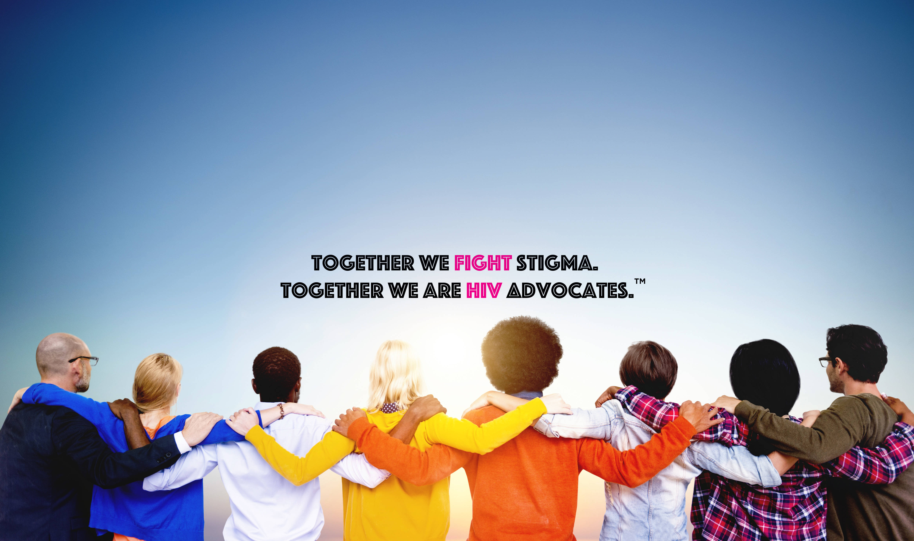

Background and Significance of the study
The reason that this study is so significant is because we are able to address the issue of the negative stigma against PLHIVs as we are able to teach others about how we must respect these people and not look at them negatively as they are already living with a dangerous disease which has no cure, so the least we can do is treat them as we would treat others.

The background of us starting this project is because with the increasing amounts of HIV cases in mindanao our project aims to create a project where we are able to teach people about the Dangers of HIV so they would be careful of their choices, as well as educating them about the struggles that PLHIV's experience in their day to day life.
Our project is all about producing and designing influential posters which aims to prevent the stigma against Filipinos living with HIV, AIDS, and STIs. Be it subtle, or obvious, it can negatively affect the emotional, and physical well-being of the infected people. Inspirational posters allow us to put an end to this mischievous action and spread the message of how harmful stigma, and discrimination against people with these viruses.
Our project will consist of 5 main people, 2 who will be the creatives, while the rest will tackle the research aspects. We also intend on finding volunteers who are willing to help us when it comes to making Daily quotes/infographics/posters/facts relating to HIV/AIDS which will then be posted on 3 social media accounts. We intend to make these infographics, posters, and others on free digital sites such as canva, google slides, mspaint, krita, etc. We chose to do our project this way because we believe that the world wide web is a place where everyone can share their views and thoughts about a certain topic. It is a place to express and inform thousands of individuals with information that can help them stay aware of their surroundings and their own actions.
While primarily focusing on the online aspects of this project, we also intend to create an event which will bring awareness on the issue of discrimination and stigma against people with HIV/AIDs/STDs (as long as we are permitted too and if we can find the funding for it).
About the Web Designer
Miguel P. Abrina, is a student and web designer from Ateneo De Davao University, he is a humble student who enjoys simple things in life such as family and friends. He has interest in watching sports and participating in some of them, as well as having a interest in watching shows and movies such as animated shows to tv series such as hajime no ippo, and some other shows.
^